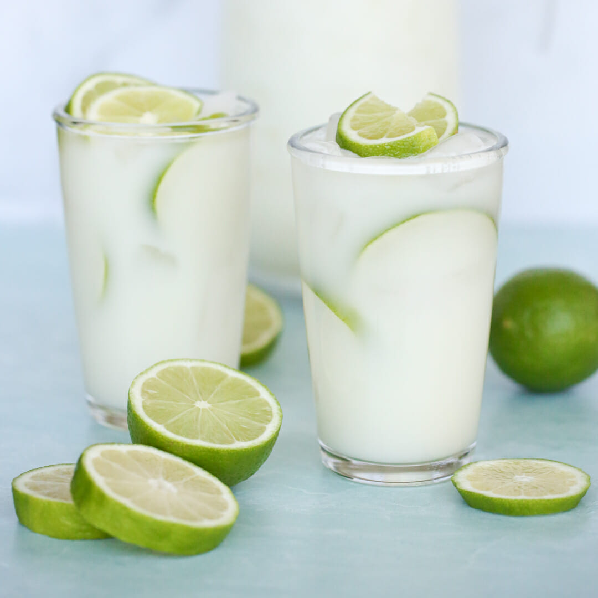

Brazilian Lemonade

Description
A quick, easy, and refreshing way to accompany your bandeja paisa is the Brazilian
lemonade. We know lemonade to be made with water, lemons, and sugar, right? Well,
this version uses limes and adds some condensed milk in the mix, making the drink
a bit more thick and milky, essentially making it something similar to a milkshake.
Give it a try:
Ingredients (four servings)
- 2 Limes
- 3 Cups of Water
- 1/2 Cup of Sugar
- 3 Tablespoons of Condensed Milk
- Ice Cubes
- Wash limes thoroughly. Cut off the ends and slice into eight wedges.
- Place limes in a blender with water, sugar, sweetened condensed milk,
and ice; pulse 5 times, or until smooth. Strain through a fine mesh
strainer to remove rinds. Serve over ice.